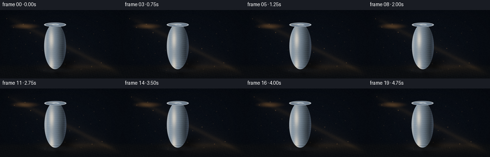
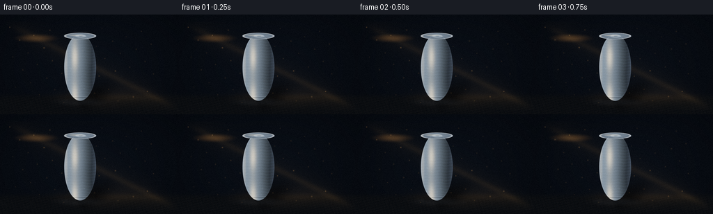
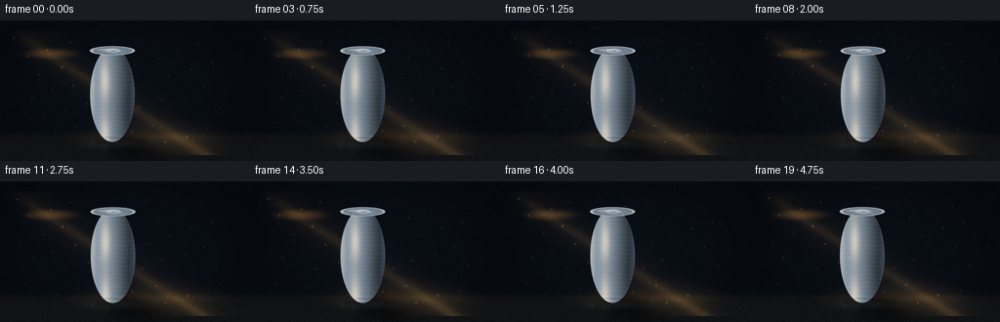
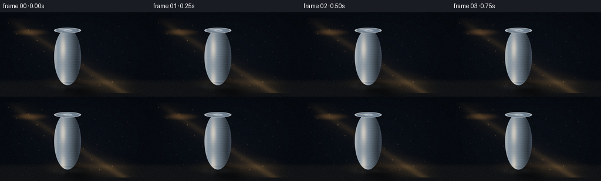

CODING AGENTS AS PIXEL WORLD MODELS
traex/DeepSeek-V4.1-Flash · phygen_042
点击播放 · 原生 RGB 像素
逐轮保存的候选
回放视频、检查图与代码变化。
每份候选均可单独播放。实际图片检查记录在下方工具轨迹中。
候选 01播放与检查图
点击播放 · 原生 RGB 像素


展开代码变化
--- 上一保存版本 +++ 本次保存版本 @@ -0,0 +1,279 @@ +"""Procedural RGB video: a diagonal beam revealing a metal can in darkness.""" + +from pathlib import Path + +import numpy as np +from PIL import Image, ImageFilter + +import artifact_io + + +W, H = 256, 144 +N, FPS = 20, 4.0 +S = 4 # Supersampling factor. +WS, HS = W * S, H * S +CASE_DIR = Path(__file__).resolve().parent + + +def smoothstep(edge0, edge1, x): + t = np.clip((x - edge0) / (edge1 - edge0), 0.0, 1.0) + return t * t * (3.0 - 2.0 * t) + + +def normalize(v): + return v / np.maximum(np.linalg.norm(v, axis=-1, keepdims=True), 1e-8) + + +def make_grid(): + y, x = np.mgrid[0:HS, 0:WS].astype(np.float32) + return x / S, y / S + + +def soft_ellipse(x, y, cx, cy, rx, ry, feather): + r = np.sqrt(((x - cx) / rx) ** 2 + ((y - cy) / ry) ** 2) + return 1.0 - smoothstep(1.0 - feather, 1.0 + feather, r) + + +def cylinder_render(x, y, t): + """Shade a slightly worn aluminum can and return color, mask and attributes.""" + cx = 115.0 + 0.65 * np.sin(t * 0.72) + cy = 76.0 + 0.16 * np.sin(t * 0.9) + rx, ry = 23.0, 48.5 + + body_metric = ((x - cx) / rx) ** 2 + ((y - cy) / ry) ** 2 + body_mask = 1.0 - smoothstep(0.965, 1.015, body_metric) + + # Elliptical lid and base give the can readable 3D volume. + top_y = cy - ry + 3.3 + bottom_y = cy + ry - 2.0 + top_r = ((x - cx) / 23.4) ** 2 + ((y - top_y) / 4.7) ** 2 + bottom_r = ((x - cx) / 23.2) ** 2 + ((y - bottom_y) / 4.5) ** 2 + top_mask = 1.0 - smoothstep(0.94, 1.03, top_r) + bottom_mask = 1.0 - smoothstep(0.94, 1.03, bottom_r) + + u = np.clip((x - cx) / rx, -1.0, 1.0) + nz = np.sqrt(np.maximum(0.0, 1.0 - u * u)) + # Surface normal; a small horizontal tilt keeps it from looking diagrammatic. + nx = u * 0.96 - nz * 0.10 + ny = -0.11 + 0.06 * np.sin((y - cy) * 0.11) + nz2 = np.sqrt(np.maximum(0.02, 1.0 - nx * nx - ny * ny)) + normal = normalize(np.stack((nx, ny, nz2), axis=-1)) + + light = normalize(np.array((-0.70, -0.54, 0.48), dtype=np.float32)) + view = np.array((0.0, 0.0, 1.0), dtype=np.float32) + half_vec = normalize(light + view) + ndl = np.clip(np.sum(normal * light, axis=-1), 0.0, 1.0) + ndh = np.clip(np.sum(normal * half_vec, axis=-1), 0.0, 1.0) + spec = ndh ** 58 + spec2 = ndh ** 11 + fresnel = (1.0 - np.clip(normal[..., 2], 0.0, 1.0)) ** 2 + + # Brushed vertical texture and a few subtle handling marks. + brushed = ( + 0.020 * np.sin(y * 1.47 + 0.8 * np.sin(x * 0.33)) + + 0.010 * np.sin(y * 4.1 + x * 0.21) + + 0.006 * np.sin(y * 9.7) + ) + wear = np.zeros_like(x) + for wx, wy, wr in ((102, 78, 1.0), (121, 107, 0.7), (108, 51, 0.6)): + wear += 0.07 * np.exp(-((x - wx) ** 2 + (y - wy) ** 2) / (2 * wr * wr)) + + base = np.stack( + ( + 0.17 + 0.52 * ndl + 0.12 * fresnel, + 0.20 + 0.61 * ndl + 0.12 * fresnel, + 0.23 + 0.68 * ndl + 0.15 * fresnel, + ), + axis=-1, + ) + base += brushed[..., None] * np.array((0.55, 0.72, 1.0)) + base += wear[..., None] * np.array((0.8, 0.8, 0.75)) + + # Warm key reflection and cool rim reflection are deliberately separated. + base += (spec * 1.48)[..., None] * np.array((1.00, 0.76, 0.43)) + base += (spec2 * 0.24)[..., None] * np.array((0.74, 0.84, 1.0)) + base += (fresnel * 0.30)[..., None] * np.array((0.38, 0.55, 0.78)) + base += (0.035 * np.sin((x - cx) * 0.31 + 1.2))[..., None] * np.array((0.4, 0.5, 0.7)) + + # Lid has a darker inset, a silver rolled rim, and a small pull tab. + inset = 1.0 - smoothstep(0.66, 0.74, top_r) + lid = np.stack( + ( + 0.23 + 0.44 * np.clip(1.0 - top_r * 0.35, 0, 1), + 0.26 + 0.51 * np.clip(1.0 - top_r * 0.35, 0, 1), + 0.29 + 0.58 * np.clip(1.0 - top_r * 0.35, 0, 1), + ), + axis=-1, + ) + lid -= inset[..., None] * np.array((0.07, 0.06, 0.04)) + rim = top_mask * smoothstep(0.68, 0.88, top_r) * (1.0 - smoothstep(0.92, 1.0, top_r)) + lid += (0.62 * rim)[..., None] + tab = soft_ellipse(x, y, cx + 0.8, top_y + 0.2, 7.5, 2.1, 0.14) + tab_hole = soft_ellipse(x, y, cx + 0.8, top_y + 0.2, 2.9, 0.72, 0.16) + lid += (0.32 * tab - 0.30 * tab_hole)[..., None] * np.array((0.9, 0.96, 1.0)) + + # Bottom bead catches a narrow return light. + bead = bottom_mask * smoothstep(0.63, 0.85, bottom_r) + base += (0.25 * bead)[..., None] * np.array((0.72, 0.80, 0.92)) + # Grooves at the base, made from two thin dark curves. + groove_y = bottom_y - 2.8 + groove = np.exp(-((y - groove_y - 0.06 * (x - cx) ** 2 / 40) / 0.58) ** 2) + groove *= (np.abs(x - cx) < 21.5).astype(np.float32) + base *= (1.0 - 0.30 * groove[..., None]) + + # Top surface overwrites body shading in its ellipse. + col = base * (1.0 - top_mask[..., None]) + lid * top_mask[..., None] + mask = np.maximum(body_mask, top_mask) + + # Darkened outer contour makes the silhouette read in the dim scene. + edge = np.clip(body_mask - (1.0 - smoothstep(0.88, 1.0, body_metric)), 0, 1) + col *= (0.86 + 0.14 * edge[..., None]) + return col, mask, (cx, cy, rx, ry, top_y, bottom_y) + + +def make_shadow(x, y, geo, t): + cx, cy, rx, ry, top_y, bottom_y = geo + # A long, soft shadow whose right edge is sharpened by the key beam. + px = x - (cx + 1.5) + py = y - (bottom_y + 2.0) + ang = -0.43 + along = px * np.cos(ang) + py * np.sin(ang) + across = -px * np.sin(ang) + py * np.cos(ang) + body_shadow = np.exp(-((across / 12.5) ** 2) - ((np.maximum(along - 19, 0) / 26.0) ** 2)) + body_shadow *= smoothstep(-9.0, 2.0, along) * (1.0 - smoothstep(46.0, 72.0, along)) + contact = np.exp(-(((x - (cx + 4)) / 27.0) ** 2 + ((y - (bottom_y + 1.5)) / 3.8) ** 2)) + contact *= (x > cx - 18) & (x < cx + 38) + shadow = np.clip(0.84 * body_shadow + 0.90 * contact, 0.0, 0.95) + # A faint penumbra around the shadow. + penumbra = np.clip(body_shadow + 0.65 * contact, 0.0, 1.0) + return shadow, penumbra + + +def beam_field(x, y, t): + # Beam centerline sweeps a fraction of a pixel over time. + sway = 1.2 * np.sin(t * 0.58) + center = 0.50 * x + 8.0 + sway + distance = y - center + core = np.exp(-(distance / 5.0) ** 2) + halo = np.exp(-(distance / 18.0) ** 2) + # It enters from upper-left and widens slightly toward the tabletop. + spread = smoothstep(-10, 180, x) + beam = (0.56 * core + 0.26 * halo) * (0.80 + 0.20 * spread) + beam *= smoothstep(6, 45, x) * (1.0 - smoothstep(205, 260, x)) + beam *= (y > 10) & (y < 138) + return beam + + +def dust_layer(x, y, t, rng): + field = np.zeros((HS, WS), np.float32) + # Tiny dust motes are concentrated in the illuminated beam. + for i in range(44): + bx = 15.0 + (i * 47.13) % 210 + by = 18.0 + (i * 29.71) % 112 + phase = rng.uniform(0, 6.28) + vx = 0.7 + rng.uniform(-0.15, 0.15) + vy = -0.22 + rng.uniform(-0.06, 0.06) + px = bx + vx * t + 1.1 * np.sin(t * 0.75 + phase) + py = by + vy * t + 0.8 * np.cos(t * 0.54 + phase) + beam_here = np.exp(-((py - (0.50 * px + 8.0)) / 16.0) ** 2) + radius = 0.45 + 0.20 * (0.5 + 0.5 * np.sin(phase)) + mote = np.exp(-((x - px) ** 2 + (y - py) ** 2) / (2 * radius * radius)) + field += mote * (0.32 + 0.68 * beam_here) + return field + + +def tone_map(rgb): + # Gentle filmic shoulder, then a cool lift in the darkest values. + rgb = np.maximum(rgb, 0.0) + rgb = 1.0 - np.exp(-1.22 * rgb) + lift = np.array((0.008, 0.013, 0.020), dtype=np.float32) + return rgb + lift * (1.0 - rgb) + + +def render_frame(index): + t = index / FPS + x, y = make_grid() + rng = np.random.default_rng(4242) + + # Near-black studio with a low, softly lit table edge. + yy = y / HS + vignette = np.exp(-(((x - 128) / 160) ** 2 + ((y - 75) / 105) ** 2)) + bg = np.empty((HS, WS, 3), np.float32) + bg[..., 0] = 0.008 + 0.017 * vignette + bg[..., 1] = 0.012 + 0.025 * vignette + bg[..., 2] = 0.020 + 0.037 * vignette + table = smoothstep(112, 122, y) + grain = 0.004 * np.sin(x * 0.42 + y * 1.73) + 0.003 * np.sin(x * 1.21 - y * 0.35) + table_col = np.stack( + ( + 0.028 + 0.016 * yy + grain, + 0.031 + 0.018 * yy + grain * 0.8, + 0.035 + 0.022 * yy + grain * 0.6, + ), + axis=-1, + ) + img = bg * (1.0 - table[..., None]) + table_col * table[..., None] + + # Sparse tabletop grain catches only the beam. + beam = beam_field(x, y, t) + beam_col = np.array((0.50, 0.34, 0.15), dtype=np.float32) + img += beam[..., None] * beam_col * (0.16 + 0.10 * table[..., None]) + + # A narrow, angled pool where the beam meets the table. + pool = soft_ellipse(x, y, 151, 119, 54, 14, 0.75) + pool *= 0.12 + 0.10 * np.exp(-((y - 119) / 5.0) ** 2) + img += pool[..., None] * np.array((0.34, 0.23, 0.11)) + + col, can_mask, geo = cylinder_render(x, y, t) + shadow, penumbra = make_shadow(x, y, geo, t) + # Shadow darkens both the table and the beam before the can is composited. + img *= (1.0 - 0.58 * penumbra[..., None]) + img *= (1.0 - 0.20 * shadow[..., None]) + + # The can occludes the beam behind it. + img = img * (1.0 - can_mask[..., None]) + col * can_mask[..., None] + + # Light wraps around the left contour and catches the top rim. + cx, cy, rx, ry, top_y, bottom_y = geo + left_rim = soft_ellipse(x, y, cx - rx + 2.4, cy - 7, 2.2, 36, 0.8) + left_rim *= can_mask + img += (0.23 * left_rim)[..., None] * np.array((0.92, 0.68, 0.35)) + top_glint = soft_ellipse(x, y, cx - 5.0, top_y - 1.0, 10.0, 1.0, 0.45) + top_glint *= can_mask + img += (0.34 * top_glint)[..., None] * np.array((1.0, 0.82, 0.50)) + + # Fine light bounce on the table just below the can. + bounce = soft_ellipse(x, y, cx + 3, bottom_y + 3.4, 27, 4.3, 0.85) + img += (0.06 * bounce)[..., None] * np.array((0.58, 0.63, 0.70)) + + # Add luminous dust only where the shaft is visible. + dust = dust_layer(x, y, t, rng) + dust *= (1.0 - 0.75 * can_mask) + img += dust[..., None] * np.array((0.34, 0.23, 0.11)) + + # Very subtle beam flare near its upper entry point. + flare = soft_ellipse(x, y, 52, 34, 19, 4, 0.9) + img += flare[..., None] * np.array((0.20, 0.12, 0.045)) + + # Slight exposure breathing and a very small handheld camera drift. + img *= 1.0 + 0.018 * np.sin(t * 0.55) + img = tone_map(img) + + # Downsample with a high-quality filter, then add a tiny amount of grain. + image = Image.fromarray(np.clip(img * 255.0, 0, 255).astype(np.uint8), "RGB") + image = image.resize((W, H), Image.Resampling.LANCZOS) + arr = np.asarray(image).astype(np.float32) + noise_rng = np.random.default_rng(1000 + index) + noise = noise_rng.normal(0.0, 1.15, (H, W, 1)).astype(np.float32) + arr += noise + arr = np.clip(arr, 0, 255).astype(np.uint8) + return arr + + +def main(): + frames = np.stack([render_frame(i) for i in range(N)]) + artifact_io.save(frames, CASE_DIR) + + +if __name__ == "__main__": + main()
候选 02播放与检查图
点击播放 · 原生 RGB 像素

展开代码变化
--- 上一保存版本
+++ 本次保存版本
@@ -3,7 +3,7 @@
from pathlib import Path
import numpy as np
-from PIL import Image, ImageFilter
+from PIL import Image
import artifact_io
@@ -136,14 +136,14 @@
# A long, soft shadow whose right edge is sharpened by the key beam.
px = x - (cx + 1.5)
py = y - (bottom_y + 2.0)
- ang = -0.43
+ ang = 0.34
along = px * np.cos(ang) + py * np.sin(ang)
across = -px * np.sin(ang) + py * np.cos(ang)
- body_shadow = np.exp(-((across / 12.5) ** 2) - ((np.maximum(along - 19, 0) / 26.0) ** 2))
- body_shadow *= smoothstep(-9.0, 2.0, along) * (1.0 - smoothstep(46.0, 72.0, along))
+ body_shadow = np.exp(-((across / 13.5) ** 2) - ((np.maximum(along - 16, 0) / 31.0) ** 2))
+ body_shadow *= smoothstep(-9.0, 2.0, along) * (1.0 - smoothstep(67.0, 91.0, along))
contact = np.exp(-(((x - (cx + 4)) / 27.0) ** 2 + ((y - (bottom_y + 1.5)) / 3.8) ** 2))
contact *= (x > cx - 18) & (x < cx + 38)
- shadow = np.clip(0.84 * body_shadow + 0.90 * contact, 0.0, 0.95)
+ shadow = np.clip(0.78 * body_shadow + 0.92 * contact, 0.0, 0.95)
# A faint penumbra around the shadow.
penumbra = np.clip(body_shadow + 0.65 * contact, 0.0, 1.0)
return shadow, penumbra
@@ -152,13 +152,13 @@
def beam_field(x, y, t):
# Beam centerline sweeps a fraction of a pixel over time.
sway = 1.2 * np.sin(t * 0.58)
- center = 0.50 * x + 8.0 + sway
+ center = 0.64 * x + 3.0 + sway
distance = y - center
- core = np.exp(-(distance / 5.0) ** 2)
- halo = np.exp(-(distance / 18.0) ** 2)
+ core = np.exp(-(distance / 6.2) ** 2)
+ halo = np.exp(-(distance / 21.0) ** 2)
# It enters from upper-left and widens slightly toward the tabletop.
spread = smoothstep(-10, 180, x)
- beam = (0.56 * core + 0.26 * halo) * (0.80 + 0.20 * spread)
+ beam = (0.72 * core + 0.33 * halo) * (0.78 + 0.22 * spread)
beam *= smoothstep(6, 45, x) * (1.0 - smoothstep(205, 260, x))
beam *= (y > 10) & (y < 138)
return beam
@@ -175,7 +175,7 @@
vy = -0.22 + rng.uniform(-0.06, 0.06)
px = bx + vx * t + 1.1 * np.sin(t * 0.75 + phase)
py = by + vy * t + 0.8 * np.cos(t * 0.54 + phase)
- beam_here = np.exp(-((py - (0.50 * px + 8.0)) / 16.0) ** 2)
+ beam_here = np.exp(-((py - (0.64 * px + 3.0)) / 18.0) ** 2)
radius = 0.45 + 0.20 * (0.5 + 0.5 * np.sin(phase))
mote = np.exp(-((x - px) ** 2 + (y - py) ** 2) / (2 * radius * radius))
field += mote * (0.32 + 0.68 * beam_here)
@@ -206,9 +206,9 @@
grain = 0.004 * np.sin(x * 0.42 + y * 1.73) + 0.003 * np.sin(x * 1.21 - y * 0.35)
table_col = np.stack(
(
- 0.028 + 0.016 * yy + grain,
- 0.031 + 0.018 * yy + grain * 0.8,
- 0.035 + 0.022 * yy + grain * 0.6,
+ 0.045 + 0.020 * yy + grain,
+ 0.047 + 0.022 * yy + grain * 0.8,
+ 0.049 + 0.025 * yy + grain * 0.6,
),
axis=-1,
)
@@ -217,12 +217,12 @@
# Sparse tabletop grain catches only the beam.
beam = beam_field(x, y, t)
beam_col = np.array((0.50, 0.34, 0.15), dtype=np.float32)
- img += beam[..., None] * beam_col * (0.16 + 0.10 * table[..., None])
+ img += beam[..., None] * beam_col * (0.22 + 0.11 * table[..., None])
# A narrow, angled pool where the beam meets the table.
pool = soft_ellipse(x, y, 151, 119, 54, 14, 0.75)
- pool *= 0.12 + 0.10 * np.exp(-((y - 119) / 5.0) ** 2)
- img += pool[..., None] * np.array((0.34, 0.23, 0.11))
+ pool *= 0.15 + 0.13 * np.exp(-((y - 119) / 5.0) ** 2)
+ img += pool[..., None] * np.array((0.40, 0.27, 0.12))
col, can_mask, geo = cylinder_render(x, y, t)
shadow, penumbra = make_shadow(x, y, geo, t)
@@ -260,7 +260,7 @@
img = tone_map(img)
# Downsample with a high-quality filter, then add a tiny amount of grain.
- image = Image.fromarray(np.clip(img * 255.0, 0, 255).astype(np.uint8), "RGB")
+ image = Image.fromarray(np.clip(img * 255.0, 0, 255).astype(np.uint8))
image = image.resize((W, H), Image.Resampling.LANCZOS)
arr = np.asarray(image).astype(np.float32)
noise_rng = np.random.default_rng(1000 + index)
候选 03播放与检查图
点击播放 · 原生 RGB 像素


展开代码变化
--- 上一保存版本
+++ 本次保存版本
@@ -206,12 +206,14 @@
grain = 0.004 * np.sin(x * 0.42 + y * 1.73) + 0.003 * np.sin(x * 1.21 - y * 0.35)
table_col = np.stack(
(
- 0.045 + 0.020 * yy + grain,
- 0.047 + 0.022 * yy + grain * 0.8,
- 0.049 + 0.025 * yy + grain * 0.6,
+ 0.048 + 0.018 * yy + grain,
+ 0.050 + 0.020 * yy + grain * 0.8,
+ 0.052 + 0.023 * yy + grain * 0.6,
),
axis=-1,
)
+ # A dim ambient bounce keeps the tabletop from clipping to black at the edge.
+ table_col += (0.012 * smoothstep(0.0, 1.0, yy))[..., None] * np.array((0.72, 0.82, 1.0))
img = bg * (1.0 - table[..., None]) + table_col * table[..., None]
# Sparse tabletop grain catches only the beam.
@@ -227,8 +229,8 @@
col, can_mask, geo = cylinder_render(x, y, t)
shadow, penumbra = make_shadow(x, y, geo, t)
# Shadow darkens both the table and the beam before the can is composited.
- img *= (1.0 - 0.58 * penumbra[..., None])
- img *= (1.0 - 0.20 * shadow[..., None])
+ img *= (1.0 - 0.49 * penumbra[..., None])
+ img *= (1.0 - 0.18 * shadow[..., None])
# The can occludes the beam behind it.
img = img * (1.0 - can_mask[..., None]) + col * can_mask[..., None]
候选 04播放与检查图
可观测工具轨迹
实际执行的命令与返回图片。
命令 1exit 0
/bin/bash -c "pwd && rg --files -g '"'!*.git*'"' | sed -n '1,160p'"
命令 2exit 0
/bin/bash -c "printf '%s\\n' '--- prompt.txt ---'; cat prompt.txt; printf '%s\\n' '--- GENERATION_RULES.md ---'; cat GENERATION_RULES.md; printf '%s\\n' '--- task_spec.json ---'; cat task_spec.json"
命令 3exit 0
/bin/bash -c "find . -maxdepth 2 -type f -not -path './.git/*' -printf '%p %s bytes\\n' | sort"
命令 4exit 0
/bin/bash -c "sed -n '1,240p' artifact_io.py"
命令 5exit 0
/bin/bash -c "sed -n '1,240p' player_template.html"
命令 6exit 0
/bin/bash -c "python - <<'PY'
import numpy, PIL
print('numpy', numpy.__version__)
print('PIL', PIL.__version__)
PY"命令 7exit 0
/bin/bash -c 'command -v chafa || command -v viu || command -v jp2 || command -v img2txt || true'
命令 8exit 0
/bin/bash -c 'command -v ffmpeg || true; command -v ffprobe || true'
命令 9exit 0
/bin/bash -c "python - <<'PY'
mods=['cv2','imageio','imageio_ffmpeg','av','matplotlib','scipy']
for m in mods:
try:
x=__import__(m)
print(m,'yes',getattr(x,'__version__',''))
except Exception as e:
print(m,'no')
PY"命令 10exit 0
/bin/bash -c 'python generate.py'
命令 11exit 0
/bin/bash -c "python - <<'PY'
from PIL import Image
import numpy as np
im=np.array(Image.open('frames/00.png'))
print('shape',im.shape,'min/max/mean',im.min(),im.max(),im.mean(axis=(0,1)).round(2))
# Luminance ascii, 96x36, each cell covers ~2.7x4 pixels.
lum=im.astype(float)@np.array([.2126,.7152,.0722])
chars=' .,:;irsXA253hMHGS#9B&@'
for yy in range(0,144,4):
line=''
for xx in range(0,256,3):
v=lum[yy:yy+4,xx:xx+3].mean()
# emphasize dark range
idx=int(np.clip((v/45)**.65*(len(chars)-1),0,len(chars)-1))
line+=chars[idx]
print(line)
PY"命令 12exit 0
/bin/bash -c "python - <<'PY'
from PIL import Image
import numpy as np
im=np.array(Image.open('frames/00.png')).astype(float)
# print luminance levels at key positions and RGB swatches
for name,x,y in [('beam',80,35),('canleft',99,80),('canmid',114,80),('canright',135,80),('shadow',160,130),('table',210,130),('bg',220,70)]:
print(name,im[y,x].astype(int))
# percentiles by regions
for name,a in [('all',im),('can',im[35:125,90:140]),('top',im[:110]),('table',im[122:])]:
lum=a@np.array([.2126,.7152,.0722])
print(name, np.percentile(lum,[1,10,50,90,99]).round(1))
PY"命令 13exit 0
/bin/bash -c "python - <<'PY'
from PIL import Image
im=Image.open('inspection.png')
print(im.size)
im.resize((1024,330),Image.Resampling.NEAREST).save('.tmp/inspection_large.png')
PY"命令 14exit 0
/bin/bash -c "python - <<'PY'
from PIL import Image
import numpy as np
im=np.array(Image.open('frames/00.png')).astype(float)
for y in [20,30,40,50,60,70,80,90,100,110,120,130]:
pts=[]
for x in [20,50,80,110,140,170,200,230]:
pts.append(f'{im[y,x].mean():4.0f}')
print(y,' '.join(pts))
PY"命令 15exit 0
/bin/bash -c 'python generate.py'
命令 16exit 0
/bin/bash -c "python - <<'PY'
from PIL import Image
import numpy as np
im=np.array(Image.open('frames/00.png'))
print('mean',im.mean(axis=(0,1)).round(1),'max',im.max(),'min',im.min())
for name,x,y in [('beam',80,55),('canleft',99,80),('canmid',114,80),('canright',135,80),('shadow',172,135),('table',222,130),('bg',220,70)]:
print(name,im[y,x].astype(int))
lum=im.astype(float)@np.array([.2126,.7152,.0722])
chars=' .,:;irsXA253hMHGS#9B&@'
for yy in range(0,144,4):
line=''
for xx in range(0,256,3):
v=lum[yy:yy+4,xx:xx+3].mean()
idx=int(np.clip((v/48)**.65*(len(chars)-1),0,len(chars)-1))
line+=chars[idx]
print(line)
PY"命令 17exit 0
/bin/bash -c "python - <<'PY'
from PIL import Image
import numpy as np
im=np.array(Image.open('frames/00.png'))
# Save crops enlarged for structural inspection.
Image.open('frames/00.png').crop((62,20,215,142)).resize((612,488),Image.Resampling.NEAREST).save('.tmp/focus.png')
# Detect frame-to-frame change metrics.
ims=[np.array(Image.open(f'frames/{i:02d}.png')).astype(float) for i in range(20)]
print('frame means', [round(x.mean(),2) for x in ims])
print('consecutive MAE', [round(np.abs(ims[i]-ims[i-1]).mean(),3) for i in range(1,20)])
PY"命令 18exit 0
/bin/bash -c "python - <<'PY'
import generate, numpy as np
x,y=generate.make_grid()
col,mask,geo=generate.cylinder_render(x,y,0)
sh,pen=generate.make_shadow(x,y,geo,0)
# report shadow on table only, 2x downsample
from PIL import Image
for name,a in [('shadow',sh),('pen',pen)]:
b=np.asarray(Image.fromarray(np.clip(a*255,0,255).astype('uint8')).resize((256,144),Image.Resampling.BOX))
print(name,'nonzero',np.count_nonzero(b>8),'max',b.max())
for yy in range(118,144,4):
print(' '.join(f'{b[yy:yy+4,xx:xx+4].mean():3.0f}' for xx in range(120,248,8)))
PY"命令 19exit 0
/bin/bash -c "python - <<'PY'
from PIL import Image
import numpy as np
im=np.array(Image.open('frames/00.png')).astype(int)
# x profile at selected table rows
for y in [122,126,130,134,138,142]:
print('y',y, [(x, tuple(im[y,x])) for x in range(124,225,12)])
PY"命令 20exit 0
/bin/bash -c "python - <<'PY'
from PIL import Image
import numpy as np
im=np.array(Image.open('frames/00.png')).astype(float)
# Print a coarse color-labelled luminance map with darker contrast stretching.
lum=im@np.array([.2126,.7152,.0722])
chars=' .:-=+*#%@'
print('shadow region, per 2px blocks, contrast scale 0..80')
for yy in range(112,144,2):
line=''
for xx in range(100,240,2):
v=lum[yy:yy+2,xx:xx+2].mean()
idx=int(np.clip(v/80*(len(chars)-1),0,len(chars)-1))
line+=chars[idx]
print(f'{yy:03d} '+line)
PY"命令 21exit 0
/bin/bash -c 'python generate.py'
命令 22exit 0
/bin/bash -c "python - <<'PY'
from PIL import Image
import numpy as np, pathlib
files=sorted(pathlib.Path('frames').glob('*.png'))
ims=np.stack([np.array(Image.open(p)) for p in files])
print('frames',ims.shape,ims.dtype)
print('rgb min/max/mean',ims.min(axis=(0,1,2)),ims.max(axis=(0,1,2)),ims.mean(axis=(0,1,2)).round(2))
print('consecutive MAE', [round(np.abs(ims[i].astype(float)-ims[i-1]).mean(),2) for i in range(1,len(ims))])
print('files')
for p in sorted(pathlib.Path('.').glob('*')):
print(p.name, p.stat().st_size if p.is_file() else '<dir>')
im=ims[0].astype(float)
lum=im@np.array([.2126,.7152,.0722])
chars=' .,:;irsXA253hMHGS#9B&@'
for yy in range(0,144,4):
line=''
for xx in range(0,256,3):
v=lum[yy:yy+4,xx:xx+3].mean()
idx=int(np.clip((v/48)**.65*(len(chars)-1),0,len(chars)-1))
line+=chars[idx]
print(line)
PY"命令 23exit 0
/bin/bash -c "python - <<'PY'
import json, pathlib
import numpy as np
from PIL import Image
spec=json.loads(pathlib.Path('task_spec.json').read_text())
z=np.load('pixels.npz')['pixels']
frames=np.stack([np.array(Image.open(p)) for p in sorted(pathlib.Path('frames').glob('*.png'))])
packed=(frames[...,0].astype(np.uint32)<<16)|(frames[...,1].astype(np.uint32)<<8)|frames[...,2]
print('spec',spec)
print('npz',z.shape,z.dtype,'frames',frames.shape,frames.dtype)
print('packed matches npz:',np.array_equal(z,packed.transpose(1,2,0)))
print('html payload:',pathlib.Path('index.html').stat().st_size,'bytes')
print('all unique frame pairs:',len({frames[i].tobytes() for i in range(20)}))
PY"命令 24exit 0
/bin/bash -c 'git status --short 2>/dev/null || true'
命令 25exit 0
/bin/bash -c "python -m py_compile generate.py && python - <<'PY'
import generate, numpy as np
x,y=generate.make_grid(); col,mask,geo=generate.cylinder_render(x,y,0)
sh,pen=generate.make_shadow(x,y,geo,0)
# Coarse region stats confirm a visible can and a cast shadow below/right.
def down(a): return np.asarray(__import__('PIL').Image.fromarray(np.clip(a*255,0,255).astype('uint8')).resize((256,144),__import__('PIL').Image.Resampling.BOX)).astype(float)/255
m=down(mask); s=down(sh); p=down(pen)
print('can area pixels',int((m>.5).sum()),'can bbox',np.where(m>.5)[1].min(),np.where(m>.5)[1].max(),np.where(m>.5)[0].min(),np.where(m>.5)[0].max())
print('shadow area pixels',int((s>.15).sum()),'max',round(float(s.max()),3))
print('shadow centroid',np.round(np.array(np.where(s>.15)).mean(axis=1),1).tolist())
PY"保存候选 4 份；完成命令 25 次；可验证图片返回 0 张。原始 API 响应与完整日志保留在本地。